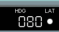
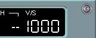
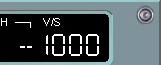
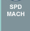
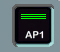
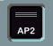

Flight Control Unit
   |
|  |
APPR Button
The APPR Button Arms, engages, or disengages the following modes:
- LOC and G/S modes if an ILS approach has been selected via the flight plan or RADIO NAV page or RMP (takes a minimum of 3 seconds after arming for the LOC and/or G/S to engage in the capture mode).
- APP NAV, FINAL, and FINAL APP modes if a non-precision approach has been selected from the MCDU database.
|
CAUTION
Do not arm the ILS APPR mode above 8000 feet AGL. Radio altimeter signals are not available above this altitude and with the APPR button armed, the autopilot disengages at glideslope capture and the flight directors revert to HDG-V/S. |